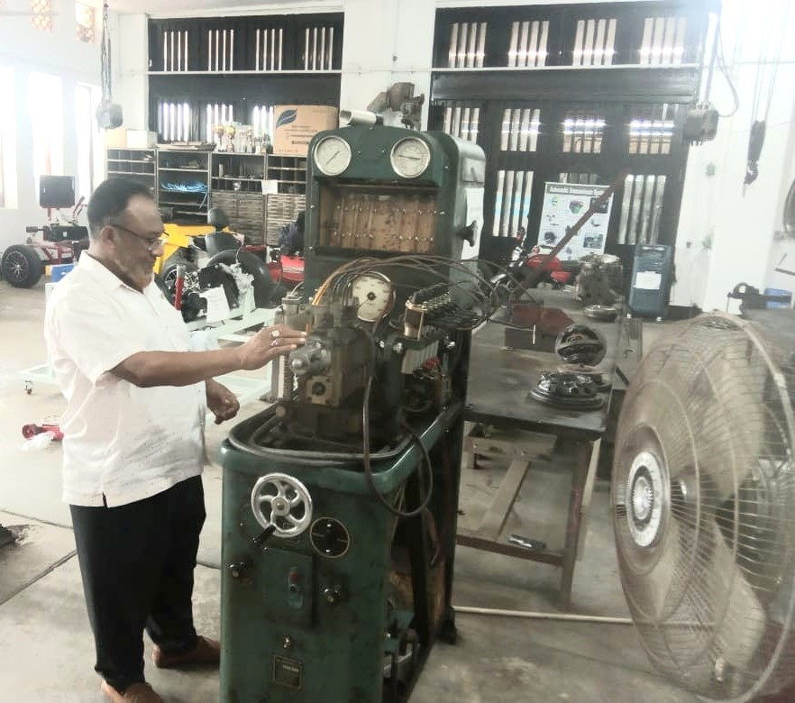

Nasir Diesel Service
Owner of Nasir Diesel Serivce
Sultan Nasir Uddin
Nasir Diesel Service - Empowering Engines for Over 35 Years

Welcome to Nasir Diesel Service, where expertise meets excellence in diesel pump and injector servicing. With a remarkable career spanning over 35 years, our founder, [Sultan Nasir Uddin], has been a stalwart in the diesel pump servicing industry. His passion for precision, commitment to quality, and unwavering dedication have made Nasir Diesel Service a trusted name in the business.
About [Sultan Nasir Uddin]:
[Sultan Nasir Uddin] is a seasoned Diesel Pump and Injector Technician with a wealth of experience that extends across a diverse range of diesel pumps injector. His journey began over three decades ago, and since then, he has been at the forefront of technological advancements and industry best practices. His hands-on approach, coupled with an in-depth understanding of diesel systems, has earned him a reputation for being a reliable and skilled technician.
Expertise:
Diesel Pump Servicing: [Sultan Nasir Uddin] specializes in the meticulous servicing of diesel pumps, ensuring optimal performance and efficiency. His keen attention to detail sets him apart in diagnosing and rectifying issues, making Nasir Diesel Service a preferred destination for diesel pump maintenance.
Injector Precision: As a seasoned Injector Technician, [Sultan Nasir Uddin] excels in the intricate art of injector calibration. His expertise ensures that fuel is delivered with pinpoint accuracy, maximizing engine performance while minimizing fuel consumption.
Nasir Diesel Service: A Legacy of Excellence:
Founded by [Sultan Nasir Uddin], Nasir Diesel Service stands as a testament to his unwavering commitment to quality and customer satisfaction. The workshop is equipped with state-of-the-art facilities, enabling the team to handle a wide range of diesel engines, from industrial machinery to commercial vehicles.
Mission Statement:
Nasir Diesel Service, our mission is to keep engines running at their peak performance. We believe in delivering not just services, but solutions that empower our clients' machinery to operate efficiently and reliably. Customer satisfaction is our driving force, and we take pride in the long-lasting relationships we've built with businesses and individuals alike.
Contact Nasir Diesel Service:
Mobile No 1: 01715349518
Mobile No 2: 01872406253
Email_addres: nasds934@gmail.com
location : Dewanhat,behind hussain spring showroom,Double Moring thana,chattogram,chattogram,bangladesh
For all your diesel pump and injector servicing needs, trust Nasir Diesel Service to deliver excellence. Contact us today to experience the precision and expertise that only over 35 years of dedicated service can provide.